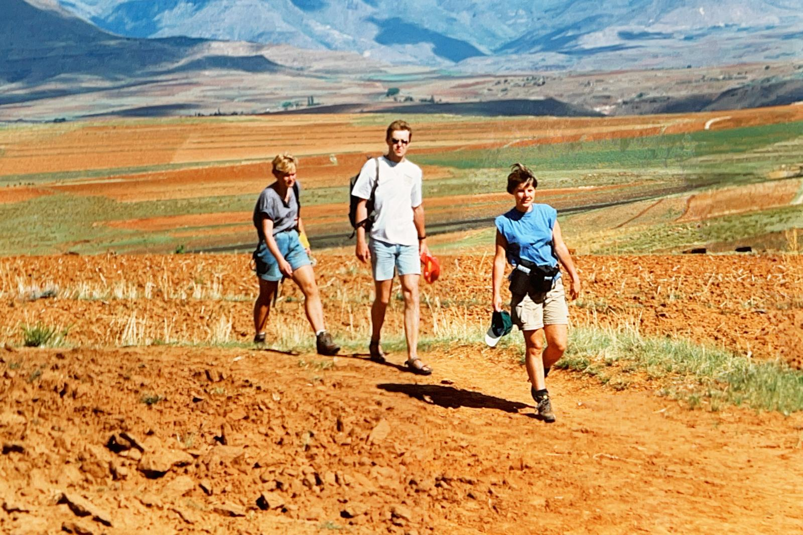
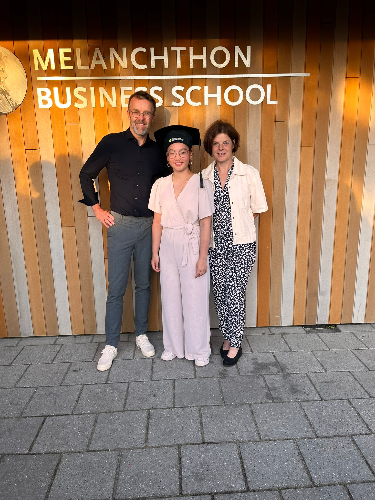

26 september 1997
Bul uitreiking Anne-Marie.
Een reis door de tijd
Liefde, avontuur en vooral heel veel mooie herinneringen. Dat is wat wij hebben ontdekt tijdens het
maken van deze tijdlijn. Dit jaar zijn ze 25 jaar getrouwd en in deze 25 jaar zijn er veel mooie
herinneringen gemaakt. Velen van jullie zullen de meesten van deze momenten wel hebben bijgewoond of
hebben hier veel verhalen over gehoord. Vanaf de eerste ontmoeting tot aan de vele reizen, alles zit
verwerkt in deze tijdlijn. Om speciaal samen nog eens terug te blikken hebben wij deze momenten,
mijlpalen en belangrijke gebeurtenissen hierin verwerkt.
Herbeleef samen met Anne en wout hun 25 jaar wat zij samen hebben doorgebracht en op naar nog 25
jaren.
Gefeliciteerd met jullie 25 jarig huwelijk.
Kusjes,
Jade en An-lei
Bul uitreiking Anne-Marie.
Wout en Anne ontmoeten elkaar op hun reis naar Zuid-Afrika.
Reis naar China en Tibet.
Reis naar Peru.
Wout en Anne trouwen.
Wout en Anne verhuizen naar Capelle aan de IJssel .
Wintersport.
Wout studeert af aan de HAO logistiek en economie.
Op bezoek bij Wout in Denemarken met Gerrit, Judy, Jan en Luud.
Op naar China om Jade te ontmoeten.
Vakantie Koningsleiten Salzachursprung Nadernachta
Voor de 2e keer naar China om An Lei op te halen, dit keer is Jade mee. 31 mei is het gezin weer terug in Nederland
Eerste oud en nieuw in het nieuwe huis in Berkel en Rodenrijs.
Anne wordt hoofd uitvoeringseenheid gesloten jeugdzorg .
Vakantie
China rondreis met z’n viertjes.
Wout en Anne 12,5 jaar huwelijk, dit werd gevierd bij de zoete suikerbol in Pijnacker.
Vakantie in Florence
Vakantie in Theoule-Sur-Mer.
Raften met de meiden in Dimaro.
Reis naar China
Anne-marie besluit haar ski’s links te laten liggen en grijpt voor het eerst naar de telemark’s.
Eerste zomer kamperen in Embrun waar wout in contact komt met zijn nieuwe passie: triatlon.
Wout rent zijn eerste marathon met een toptijd van 4:03.
oudste dochter geslaagd op het middelbaar beroepsonderwijs
Vakantie met Jan en Luud naar Denemarken.
Wout verjaardag vieren in Turijn
Jongste dochter geslaagd op het middelbaar beroepsonderwijs.
Wout rent de marathon van Brussel en Anne en Wout laten voor het eerst de kinderen alleen thuis
25 jaar huwelijk
Eror in progress